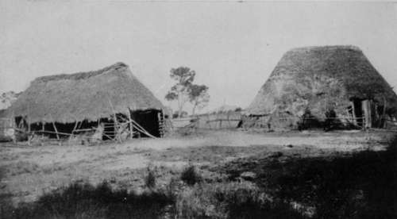
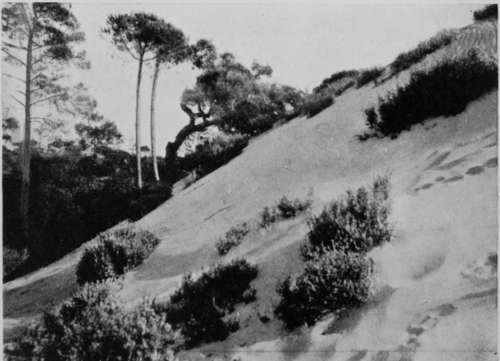

II. Birds'-Nesting In Spain. Part 7
Description
This section is from the book "Bird-Hunting Through Wild Europe", by R. B. Lodge. Also available from Amazon: Bird-Hunting Through Wild Europe.
II. Birds'-Nesting In Spain. Part 7
We had already seen some of the effects of the disastrous drought, and had heard dismal tales of the condition of the marismas ; but when we arrived there we found that the reality exceeded our worst expectations.
I could hardly believe my eyes, or realize that it was the same district I had visited in 1897. In ordinary years this region is covered with shallow water during the winter and spring months, which gradually dries up under the burning heat of the summer sun. As far as the eye can see, shut in between desolate sand-dunes, the home of many rabbits, and extensive pine-woods, inhabited only by Eagles, Ravens and Kites, and tangled, thorny thickets, which shelter the Red Deer, the Lynx, and the Wild Boar, are leagues and leagues of water stretching to the horizon. In the shallows stand thousands of Flamingoes in long lines, just like regiments of soldiers. Circling flocks of Gulls and Terns are screaming overhead, while on the moist, muddy shores, and wading about in the water, are countless thousands of marsh birds-Godwits, Curlews, Knots, Dunlins, Plovers, Stilts, and Avocets. For through these marismas must pass twice each year more than half of the wading birds bound for the north of Europe. Those Knots, for instance, are not stopping here, but merely feeding and resting on their long journey to their nesting-grounds round the Pole. To-morrow they will probably have passed on and their places will have been taken by others. The deeper pools, fringed with reeds and tamarisks, are resorted to by the beautiful Southern Herons, which nest in great numbers on the submerged bushes.
This year, however, in April, where there should have been this great expanse of water, alive with an infinite variety of graceful bird forms, there was absolutely no water at all for miles. The ground was perfectly dry and baked by the sun to the hardness of brick. Around the few damp spots in the deeper parts where there still lingered a little moisture were pitiable groups of half-starved cattle and horses, struggling in the stiff mud up to their bellies in order to reach what little vegetation still remained, and find a few drops of water to quench their thirst. It was a dreadful sight; and if this was the state of affairs in April one does not like to think of their sufferings during the long, scorching days of summer. The Vultures would probably have cause to remember 1905 as a year of unusual plenty. For no rain fell until late in the autumn, the drought having lasted for ten months ; the crops were an utter failure, and the cattle perished by thousands.
Spanish Chozas
The Edge Of The Sand Dunes
There was the greatest distress among the population, and starving mobs of people paraded the towns clamouring for work and bread. In ordinary years brigandage in Spain is almost stamped out, or at least kept under by the efficiency of the Guardas civiles; but in times of scarcity like these it is apt to crop up unexpectedly, especially in remote districts and in the sierras. Smuggling, too, is never altogether kept under-desperate conflicts between armed contrabandistas and the civil guards being of constant occurrence, and it does not take much to convert a contrabandista into a brigand. We had, in fact, been strongly advised not to travel unarmed ; and when we left Gibraltar many of the residents who have country houses in the neighbourhood were shutting them up and coming into the town with their families and movables.
Under these circumstances we could not expect to find a great number of birds in the marismas. And indeed there was hardly one to be seen, nothing to break the bare expanse of sun-baked mud except the deceptive glamour of the mirage. In the middle distance would be plainly visible sometimes broad, reed-fringed pools, or busy havens full of shipping, with the towers and cupolas of a phantom town bathed in a mysterious golden haze. You knew it was but the mirage, that such things had no existence ; but so realistic was the deception that it was almost impossible to believe that it was simply an illusion.
A few Buff-backed Herons were to be seen in attendance on the groups of half-starved cattle. They are called Garrapatosas-'tick-eaters'-by the Spaniards, from their habit of perching on the backs of cattle and horses in order to free them from their insect pests ; but their usual nesting-place, a remote lagoon surrounded by leagues of desolate sand-dunes and forests, had been completely dried up and obliterated, literally stamped out of existence by the cattle seeking in their thirst the last drop of moisture.
Gone was all the wealth of bird life which makes this region of such intense interest to the naturalist. The Flamingoes, the graceful Little Egrets, the Night and Squacco Herons, the funereal Glossy Ibis, the quaint Stilts, and Avocets had not arrived this season, or if they had arrived they had gone on elsewhere. The few Pratincoles, Redshanks, and Plovers which could be seen did not appear to be nesting.
Continue to: